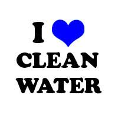
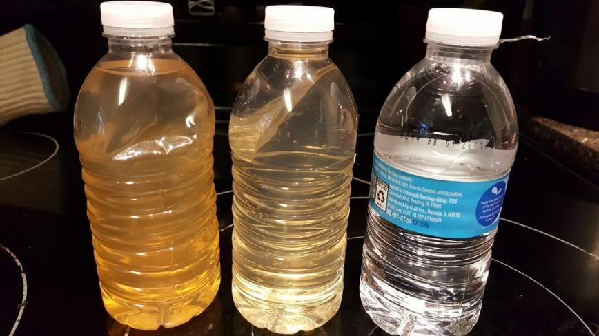
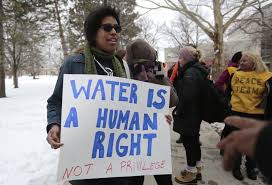
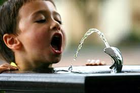
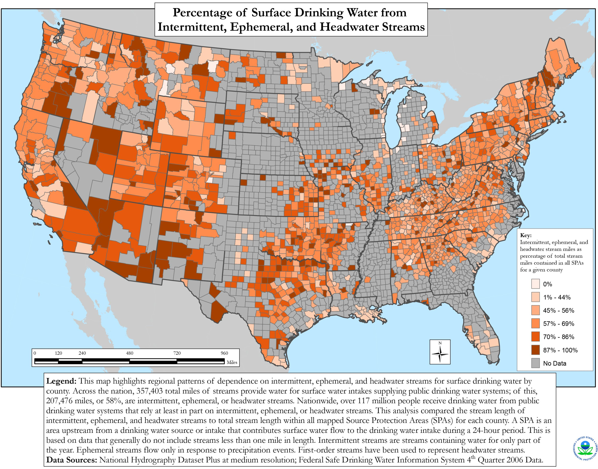

Our Mission
Our Values
Independence
We are a public interest organization that remains independent of corporate and government influence. We are funded fully through our members, individual donors, and foundation grants.
Democracy
We engage and mobilize citizens politically through person-to-person, on-the-ground organizing, educational campaigns and new media technologies. We believe political involvement is critical for holding governments accountable to their constituents and for creating policies that ensure a sustainable world with safe food and clean water.
Human Rights
Although food and water are human rights, the political will to ensure that all people have adequate nutrition and drinking water is lacking. We are part of the growing global movement fighting this injustice.
Sustainability
We believe in a sustainable future — one that ensures access to essential resources for future generations while protecting the quality of our environment.
What Can You Do?
- Donate
- Give Monthly
- Your donation goes further because they can count on you every month to support them
- Fundraise
About
Food and Water Watch This is a website that explains all about this organization






Clean Water is a Human Right!
Clean drinking water is a human right, but even in the United States, people have to worry about whether their water is safe to drink, and whether they can afford it. This IS a problem we can solve! We need dedicated funding to keep our water systems up to date and affordable to protect our drinking water for generations to come.